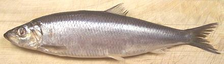
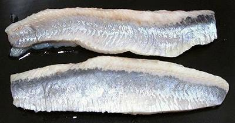
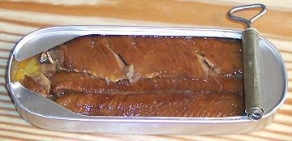
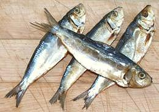
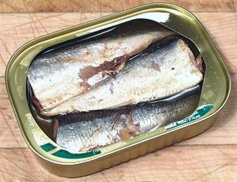
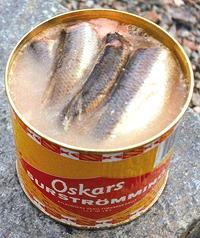

Herring Pickled, Kippered, Canned, Dried etc.

[Family Clupea, various genera and species]
Herring is a small oily fish that preserves well in various ways, and all
these ways are exploited. The photo shows a whole Atlantic Herring, salt
pickled in brine. When Central and Northern European recipes call for
whole herring, this is what they mean. They will usually ask you to
soak it overnight before use to reduce the salt. See also
Canned Sardines, smaller members
of the Herring Family.
More on the Herring Family.
Pickled Herring Fillets

This photo is of a pair of pickled herring fillets from Lithuania, a
significant producer of this sort of seafood treats since the fall of
the Soviet Union. These were about 6-1/2 inches long and weighed about
2-1/4 ounces each. Pickling is a very popular method of preparing herring,
because the acid in the pickle softens the thread-like spines that are
shot all through the flesh to the point they are undetectable.
Many recipes can be found for making your own pickled herring, nearly
all starting with the brine pickled Atlantic herring as pictured at the
top of the page, then adding flavors and vinegar.
Kippered Herring

Technically, kippered herring are herring that have been split open,
salted and smoked. They are made during the spawning season when the fish
don't taste very good without this treatment. Most Americans have never
seen a real kippered herring but are familiar with the version that comes
in a can, generally called "kipper snacks". Kippers are a breakfast
staple in the British Isles and Scandianavia.
Salt Dried Herrings

These salted and dried Tunsoy herring are much in evidence in Philippine
markets here in Los Angeles, along with a number of other small fish
similarly treated. For details see our
Daing / Tuyo page.
Canned Sardines

Sardines are Herrings too, just smaller ones. They are sold dried,
covered on our Daing / Tuyo
page, and are very popular worldwide when canned. For details see our
Canned Sardines page.
Surströmming

Surströmming is reputed to be the most putrid stinking substance
consumed by mankind - note that the can in the photo was opened outdoors,
which is where it's most often eaten. A seasonal delicacy in northern
Sweden, it's only competitor for stinkiness is said to be Japanese
Kusaya. Both are produced
by fermenting fish in insufficient salt to properly preserve them. This,
in both cases, appears to stem from ancient times when salt was very
expensive.
Baltic herring are first fermented in tubs for one or two months, then
put up in cans - but the fermentation continues in the can, causing the
cans to swell noticeably. Surströmming is normally eaten on bread
along with potatoes and chopped red onions.
Surströmming can be mail ordered from Sweden, but I have not yet
opened my can (12-2019), so I defer my opinion to a person with direct
experience - see Details and
Cooking. Photo by Lapplaender distributed under
license Creative Commons
Attribution-ShareAlike 3.0 Germany.
sf_herrpicz 060703 - www.clovegarden.com
©Andrew Grygus - agryg@clovegarden.com - Photos
on this page not otherwise credited © cg1
- Linking to and non-commercial use of this page permitted